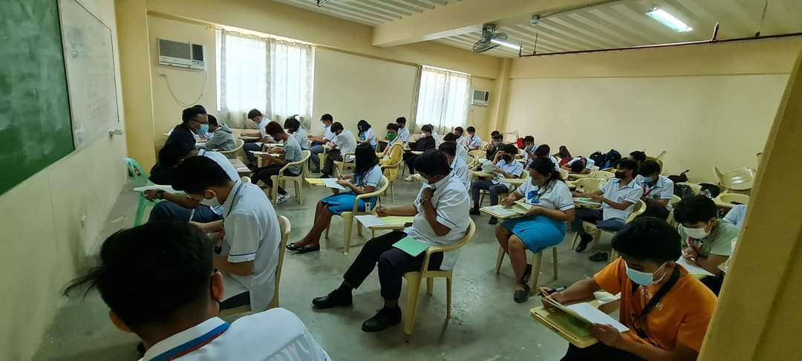

Our Story
At the heart of our collection lies a captivating visual journey that encapsulates the cherished memories and significant milestones of the students who made up the school batch during this period. From joyous laughter to heartfelt moments, our photo archive serves as a timeless testament to the vibrant spirit and unique experiences of the students.
It is a testament to the transformative power of education and the lasting bonds formed within its halls. We hope that this archive serves as a source of inspiration, reflection, and connection for all who engage with it.
The BSEMC Photo Archive serves as a visual repository of cherished moments, academic milestones, and extracurricular activities that define the first-year experience of BSEMC students during the academic year of 2022-2023. From orientation events to project collaborations, from creative showcases to campus gatherings, each photograph tells a unique story, capturing the essence of life as a BSEMC student during this specific academic year.
At BSEMC, our mission is to create a lasting collection of photographs that document the journey and camaraderie of our first-year BSEMC students during the academic year of 2022-2023. We aim to provide a platform where these students can reminisce, share, and cherish their fondest memories throughout their initial year at Gordon College Olongapo.
As custodians of this valuable collection, we are committed to maintaining the privacy and respect of all individuals featured in the archive. We prioritize obtaining consent from the individuals involved and ensure that their personal information is handled securely and responsibly. Our goal is to create a safe and inclusive space for BSEMC students to relive their memories and connect with their peers.
